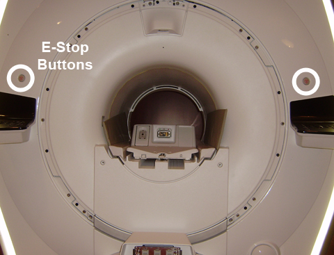
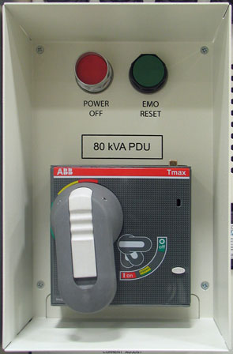

- 00000018WIA30F02CB0GYZ
- id_20603831.4
- Aug 29, 2024, 10:37:46 PM
Replacing the E-Stop button
Replace the E-Stop buttons.
Prerequisites
| Personnel requirements | |||
|---|---|---|---|
| Required persons | Preliminary requirements | Procedure | Finalization |
| 1 | 5 minutes | 45 minutes | 5 minutes |
| Tools and test equipment | |||
|---|---|---|---|
| Item | Quantity | Part number | Manufacturer |
| Nonmagnetic Titanium Service Tool Kit, Large Set | 1 | 5112581 | - |
| Replacement parts | |||
|---|---|---|---|
| Item | Quantity | Part number | Manufacturer |
| E-stop Panel, IEC 3rd Ed. | 1 | 5481761 | - |
| E-Stop Cable | 1 | 5137339-6 | - |
| Safety |
|---|
|
Before working in any GE HealthCare MR suite or doing any GE HealthCare service procedure, you must:
If you have any safety concerns at any time, do not begin work or immediately stop work and move to a safe location. Immediately contact your supervisor or site safety officer for instructions on how to proceed. |

Procedure
Finalization
- Press the EMO RESET button to return the system to normal operation.
Figure 3. EMO RESET button 
- Whenever the OCP is disconnected and then reconnected, do a TPS reset. See Doing a TPS reset.Note A TPS reset should not be necessary if the host computer is restarted.
- Do a check of the installed E-Stop button.
- Do a check of the functionality of the OCP. Run the associated diagnostic, if necessary. From the Common Service Desktop, select Diagnostics > Hardware Location > Magnet Room > SRI Functional Tests.